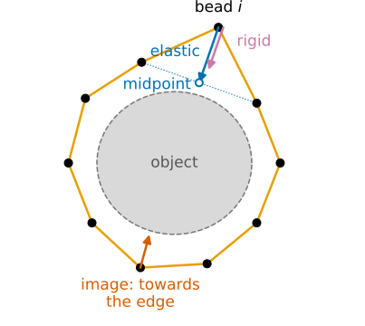
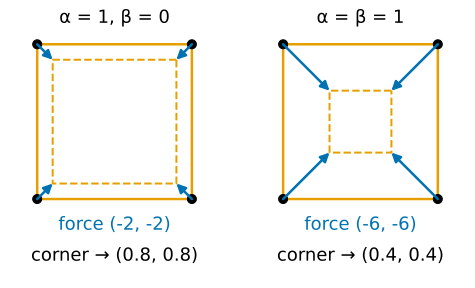
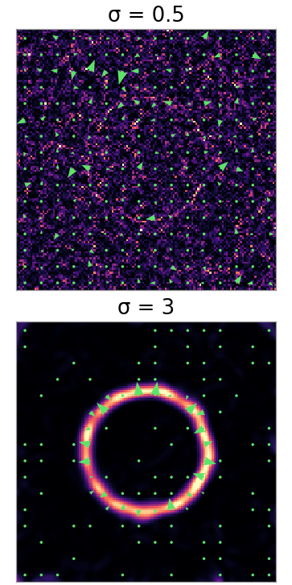
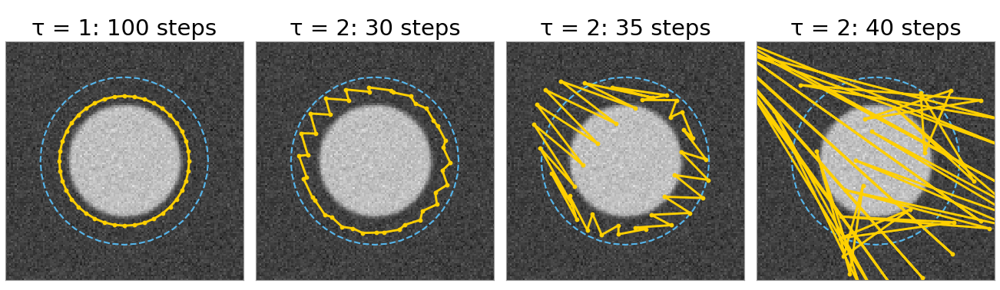
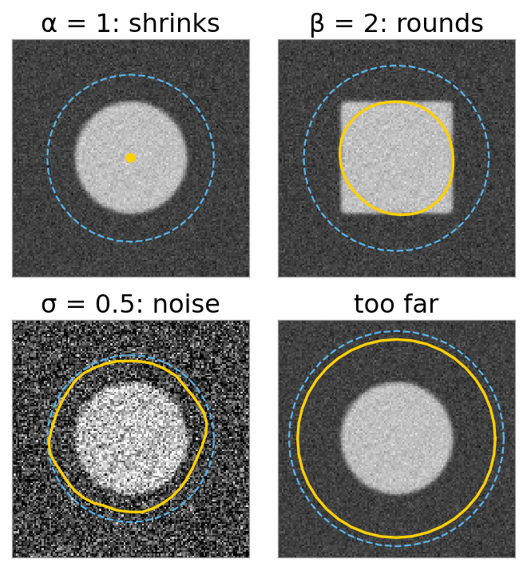

A threshold gives a ragged, leaky outline. Often we want something else: one smooth closed curve that sits on the edges of the object. An active contour, or snake (Kass, Witkin & Terzopoulos, 1988), is such a curve that moves by itself until it settles there.
A closed chain of beads: springs between neighbours, plus a pull towards edges.
The beads move downhill on an energy: internal (smooth, short) plus image (on edges).
The force on one bead, by hand: the neighbours’ midpoint, and a straightening term.
What the knobs do: elasticity \alpha, rigidity \beta, smoothing \sigma, step \tau.
What goes wrong: shrinking away, cut corners, stuck on noise, too far away, explosion.
Slides titled The math give the formulas and proofs; the ideas are complete without them.
Left: a snake starts as a circle (dashed) around a noisy disk and shrinks onto its edge. Middle: the edge map, bright where the image changes. Right: the same on a micrograph.
A threshold would label pixels; the snake gives a curve: a list of points, smooth, closed, one object. Perimeter, curvature and shape come for free.
Recall: segmentation as energy minimisation
On the graph cuts day (segmentation as energy minimisation) a segmentation was the labelling with the lowest energy: a data term (fit the image) plus \lambda times a smoothness term (short boundaries).
A snake uses the same recipe with a different unknown:
graph cut
snake
unknown
a label per pixel
the positions of n points on a closed curve
image term
grey level fits the label
the curve lies on edges
smoothness
boundary length, weight \lambda
stretching (\alpha) and bending (\beta)
minimised by
one max-flow, exact
moving the points downhill, step by step, locally
The snake finds a local minimum near where it starts. That is both its weakness (it needs a start) and its strength (it follows what you point it at).
A closed chain of beads
The curve is a polygon of n points \mathbf x_0, \dots, \mathbf x_{n-1}; after the last comes the first again.
Elastic springs between neighbours (weight \alpha): stretching costs energy. Each bead is pulled towards the midpoint of its two neighbours. A chain with springs alone contracts to a point.
Stiffness (weight \beta): bending costs energy. Each bead is pushed to make the chain locally straight; corners are expensive.
The image: low energy on edges. Each bead is pulled uphill on the edge map, towards the nearest strong edge, if there is one nearby.
The snake stops where the three forces balance at every bead.

Try it: a snake on a disk
The forces on a square, by hand
Four beads at (1, 1), (-1, 1), (-1, -1), (1, -1), no image.
Elastic (\alpha = 1): bead (1, 1) has neighbours (-1, 1) and (1, -1), midpoint (0, 0). The force is \alpha \times (sum of the neighbours -\,2\times the bead) = (-1,1) + (1,-1) - 2(1,1) = (-2, -2): twice the way to the midpoint.
One step of size \tau = 0.1: (1, 1) + 0.1\,(-2, -2) = (0.8, 0.8). All four beads do the same: the square shrinks to 0.8 and stays a square.
Rigid (\beta = 1): the straightening force at the corner is (-4, -4) (math slide). With \alpha = \beta = 1: (-6, -6), and the step lands at (0.4, 0.4).
On a fine polygon, the elastic force at a bead is the difference with its neighbours: the same [1, -2, 1] as the second-derivative kernel of Filtering & convolution.

Arrows: \tau\times force, the step each bead takes; dashed: the square after one step.
The math: the snake energy and its force
E = \sum_{i=0}^{n-1} \Big[\tfrac12\alpha\,|\mathbf x_{i+1} - \mathbf x_i|^2 + \tfrac12\beta\,|\mathbf x_{i-1} - 2\mathbf x_i + \mathbf x_{i+1}|^2 + E_\text{ext}(\mathbf x_i)\Big], \qquad \text{indices mod } n.
E is an ordinary function of 2n numbers. The force on bead i is -\partial E/\partial \mathbf x_i. Point \mathbf x_i appears in two elastic terms and three rigid terms:
[1, -2, 1] is the discrete second derivative; [1, -4, 6, -4, 1] = [1, -2, 1] * [1, -2, 1] is the fourth.
Square, \beta = 1, corner (1, 1): \mathbf x_{i\pm2} is the opposite corner (-1,-1), so -\big[(-1,-1) - 4(1,-1) + 6(1,1) - 4(-1,1) + (-1,-1)\big] = (-4, -4).
The internal forces sum to zero over all beads: moving the whole snake costs nothing.
The image term
The snake should sit where the image changes most. Smooth the image with a Gaussian of size \sigma, take the gradient (Filtering & convolution), and square its length: the edge map
f = |\nabla (G_\sigma * I)|^2, \qquad E_\text{ext} = -w\,f \quad (\text{low on edges}).
The image force on a bead is w\,\nabla f: it points uphill on the edge map, towards the ridge of the nearest edge.
Far from any edge f is flat and the force is zero: the snake does not feel the object. How far the pull reaches, the capture range, is a few \sigma.
Small \sigma: sharp, accurate edges, but noise makes its own little edges. Large \sigma: a wide pull, but blurred and slightly shifted edges.

The math: the continuous snake (Euler–Lagrange)
Let the number of beads grow: a curve \mathbf x(s), s \in [0, L), closed. The sums become integrals:
Change the curve a little, \mathbf x + \varepsilon\mathbf h. For the elastic term, integrate by parts (the curve is closed, so the boundary terms cancel):
The rigid term, integrated by parts twice, gives +\beta\mathbf x''''. A minimum needs the change to vanish for every \mathbf h: the Euler–Lagrange equation
The discrete stencils are exactly these derivatives with spacing 1. Circle \mathbf x(s) = r(\cos s, \sin s): \alpha\mathbf x'' = -\alpha\mathbf x, a force of size \alpha r towards the centre.
Moving the snake: one step at a time
Start from a curve near the object and repeat: compute the force on every bead, move every bead a little along it.
\tau (the step) small: the snake creeps downhill on the energy and stops where the forces balance.
\tau slightly too large: beads overshoot, the next force overshoots back, and a zig-zag grows until the snake explodes. With \alpha = 0.1, \beta = 0.05 this happens above \tau \approx 1.67.
The image force is read at each bead’s (non-integer) position by bilinear interpolation.

Why exactly 1.67, and a step that never explodes: the next unit.
The math: gradient descent
Stack all bead positions into one vector \mathbf x \in \mathbb R^{2n}. The update is gradient descent on E:
For small enough \tau, E(\mathbf x_{t+1}) < E(\mathbf x_t) unless \nabla E = 0 (Taylor: E(\mathbf x - \tau\nabla E) = E - \tau|\nabla E|^2 + O(\tau^2)).
“Small enough” depends on how curved E is: the internal part has curvature up to \lambda_\text{max} = 4\alpha + 16\beta, and the step is stable while \tau\lambda_\text{max} < 2. For \alpha = 0.1, \beta = 0.05: \lambda_\text{max} = 1.2, \tau < 1.67.
A fixed point is a solution of the discrete Euler–Lagrange equation: internal + image force = 0 at every bead.
Reading the knobs
knob
too small
too large
\alpha elasticity
points drift apart; slow to move in flat regions
shrinks off the edge (disk: from \alpha \approx 0.85)
\beta rigidity
follows every corner and noise wiggle
cuts corners: the square comes out rounded
\sigma smoothing
stuck on noise edges
blurred, slightly shifted edges
w image weight
snake ignores the image
stuck on the first weak edge
\tau step
slow
explodes (explicit step)
And independent of the knobs: a snake whose beads are all far from any edge feels no image force at all.

Try it: what goes wrong
Not covered here, but close
Point spacing: the beads slide along the curve and bunch up in some places. The demo can resample the curve to equal spacing every k steps. A smooth alternative: a few control points of a B-spline (spline snakes).
Searching instead of sliding: the greedy snake (Williams & Shah) tries a few positions around each bead and keeps the best. The dynamic-programming snake (Amini et al.) finds the exact best positions within a window for all beads at once: on the dynamic programming day (closed boundaries).
Curves that split and merge: an explicit chain of beads cannot. Level sets represent the curve implicitly and can: on the level set day.
Summary
A snake is a closed polygon that moves downhill on an energy: elastic (short), rigid (straight) and image (on edges) terms.
Force on a bead: \alpha pulls it towards its neighbours’ midpoint, \beta straightens, the image pulls it uphill on the edge map |\nabla(G_\sigma * I)|^2.
Balance at every bead = a local minimum = the Euler–Lagrange equation -\alpha\mathbf x'' + \beta\mathbf x'''' + \nabla E_\text{ext} = 0.